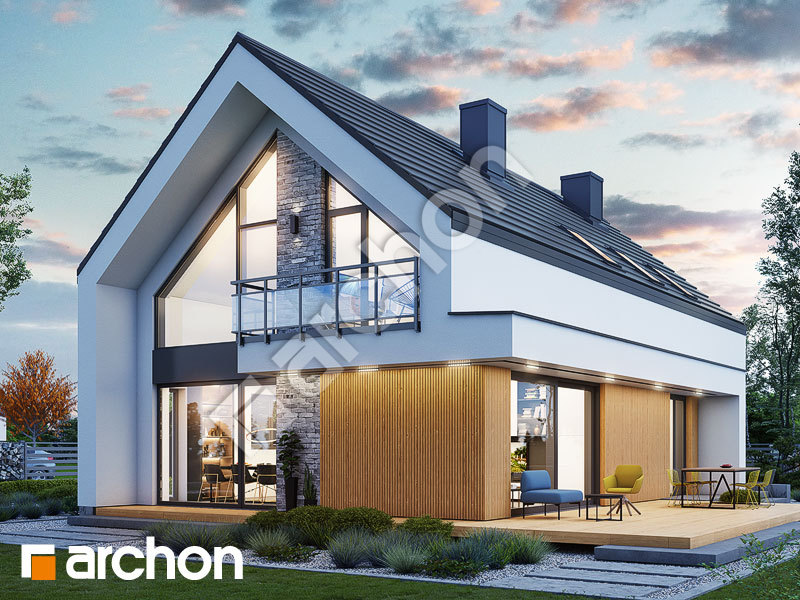
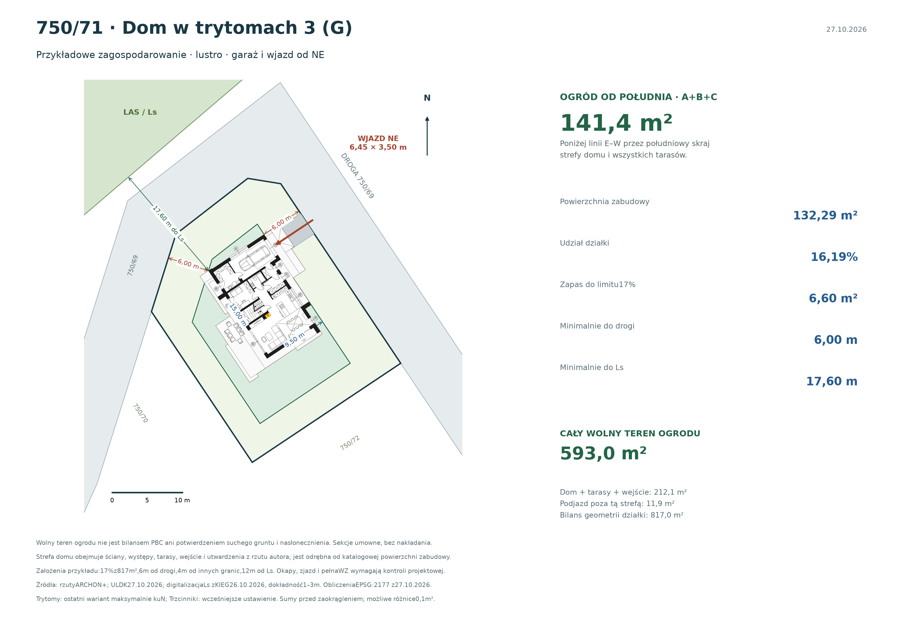
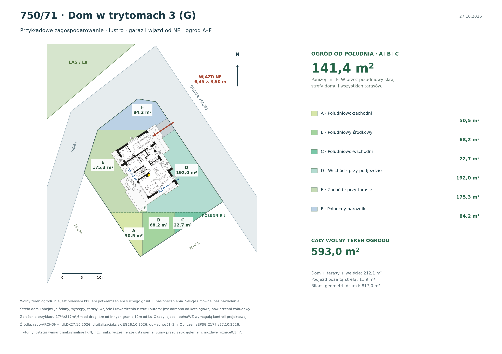

16,19% nominalnych 817 m², z garażem.
CHWASZCZYNO · DZIAŁKA 750/71Dom dosunięty na północ.
Dom dosunięty na północ.
Ogród od południa.
Przykładowe zagospodarowanie z projektem Dom w trytomach 3 (G). Ostatni uzgodniony wariant: dom przesunięty maksymalnie na północ przy zachowaniu kąta ustawienia. Względem pierwszego porównania przesunięto go o 1,26 m na północ i 0,54 m na zachód. Garaż w odbiciu lustrzanym ma wjazd od północnego wschodu, a tarasy otwierają się na południowy zachód.
220508_5.0004.750/71Wariant koncepcyjnyLustro.
Lustro.
Garaż od NE.
Przyjęto limit 17% zabudowy, 6 m od granicy drogi, 4 m od pozostałych granic i 12 m od konturu lasu. To założenia przykładu; wymagają sprawdzenia w pełnej WZ i adaptacji.
Zobacz rzut z góry ↓
Na południe od pełnej strefy domu i tarasów.
Wolny teren po rezerwach; nie bilans PBC.
01
Garaż od NE, tarasy od SW
Maksimum północne dla zachowanego kąta domu, wyznaczone na rzeczywistym czarnym obrysie ścian i występów. Ściany dochodzą do odsunięcia 6 m od dwóch boków drogi; pomocniczy prostokąt nie ogranicza tego wariantu. Podjazd od bramy garażowej do granicy działki ma około 6,45 m długości i 3,50 m szerokości. Podane odległości dotyczą ścian i występów pokazanych na rzucie, bez potwierdzenia okapów i dachu.
6,00 mminimalnie od drogi do ścian / kontrolowanego gabarytu
17,60 mminimalnie do poglądowego konturu Ls
3,50 mszerokości koncepcyjnego podjazdu

Powiększ rzut ↗Zjazd i manewrowanie do zaprojektowania. Pokazano geometrię podjazdu, bez pełnej analizy ruchu samochodu, wyjazdu tyłem, niwelety, odwodnienia ani potwierdzenia prawnego dostępu.
02
141,4 m² ogrodu od południa
Sekcje A+B+C dają 141,4 m². Leżą poniżej geograficznej linii wschód–zachód przez najbardziej południowy punkt strefy domu i wszystkich tarasów z rzutu autora. D–F obejmują pozostały wolny teren: wschodnią część przy podjeździe, zachód przy tarasie i północny narożnik.

Powiększ sekcje ogrodu ↗| Sekcja | Położenie | Powierzchnia |
|---|---|---|
| A | Południowo-zachodni | 50,5 m² |
| B | Południowy środkowy | 68,2 m² |
| C | Południowo-wschodni | 22,7 m² |
| D | Wschód · przy podjeździe | 192,0 m² |
| E | Zachód · przy tarasie | 175,3 m² |
| F | Północny narożnik | 84,2 m² |
| Ogród od południa · A+B+C | 141,4 m² | |
| Cały ogród · A–F | 593,0 m² | |
| Przeznaczenie w przykładzie | Powierzchnia |
|---|---|
| Wolny teren ogrodu A–F | 593,0 m² |
| Strefa domu, tarasów, wejścia i utwardzeń z rzutu | 212,1 m² |
| Podjazd poza powyższą strefą | 11,9 m² |
| Razem · geometria ULDK w PL-2000 | 817,0 m² |
Sumy przed zaokrągleniem; sumowanie etykiet może dać różnicę 0,1 m². Nominalne 817 m² służy do wskaźnika zabudowy, a 816,99 m² jest polem geometrii ULDK w PL-2000. Dane obliczeń ↗
Wolny teren nie oznacza potwierdzonego suchego ogrodu. Do ogrodu zaliczono również boczne pasy. Dodatkowe dojścia, miejsca postojowe, instalacje i zagospodarowanie mogą zmniejszyć te wartości. Nie potwierdzono suchości, nasłonecznienia ani bilansu powierzchni biologicznie czynnej.
03
Dom w trytomach 3 (G) · odbicie lustrzane
| Parametr | Wartość |
|---|---|
| Wersja i kierunek garażu | Lustrzane odbicie, garaż od północnego wschodu |
| Gabaryt katalogowy | 15,00 × 9,50 m; występy i tarasy pokazano osobno na rzucie |
| Powierzchnia zabudowy | 132,29 m² · 16,19% działki |
| Przyjęty limit 17% | 138,89 m² · zapas 6,60 m² |
| Powierzchnia użytkowa | 172,03 m² |
| Garaż | 19,90 m² · jedno stanowisko |
| Dach / wysokość | Dwuspadowy 40° / 8,47 m |
| Strefa do bilansu ogrodu | 212,1 m², w tym pełne tarasy, wejście i utwardzenia z rzutu; nie jest katalogową powierzchnią zabudowy |
04
Założenia i źródła
Przykład
17%, linia 6 m i kontur lasu
17% zabudowy i 6 m od granicy drogi przyjęto według polecenia użytkownika; 4 m od pozostałych granic przyjęto dla ścian z otworami. Odległość 12 m liczono od poglądowego konturu Ls, nie od koron drzew. Wcześniejsza deklaracja WZ 20% w głównej analizie zachowuje własną podstawę i datę; te przykłady nie potwierdzają treści decyzji.
Do adaptacji
Dokładna mapa, pełna WZ i projekt
Sprawdzenia wymagają pełna WZ wraz z mapą i liniami, rzeczywista granica lasu, warunki pożarowe, okapy i dach, sieci, prawny dostęp, zjazd i manewrowanie, grunt, woda i odwodnienie. Kontur lasu zdigitalizowano orientacyjnie z dokładnością 1–3 m. Wynik jest testem geometrii, nie potwierdzeniem pozwolenia na budowę.
Autor projektu, wizualizacji i rzutu parteru: ARCHON+. Parametry i oryginalne materiały odczytano 27.10.2026. Rzut odbito poziomo i ustawiono na geometrii działki.
Obraz źródłowy wersji podstawowej; na tej stronie pokazany w odbiciu lustrzanym. Przykładowe otoczenie katalogowe nie przedstawia 750/71.
Granice działki i drogi 750/69 odczytano 27.10.2026 w EPSG:2180, obliczenia metryczne w EPSG:2177. Pole geometrii 816,99 m² nie zastępuje wypisu EGiB.
Digitalizacja 26.10.2026, orientacyjna dokładność 1–3 m. Lokalny wycinek służy do wstępnego testu odległości od lasu.
Przykład i obliczenia ogrodu: 27.10.2026. Pozostałe ustalenia analizy, w tym planowanie, las i historyczny NMT, zachowują odrębne daty i ograniczenia.
Porównaj drugi dom na tej działce
Druga podstrona pokazuje alternatywny projekt w tej samej orientacji garażu, z własnym bilansem ogrodu.
Dom w trzcinnikach 4 (G) · zobacz wariant ↗